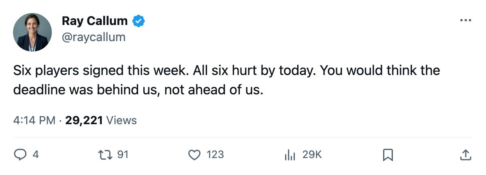
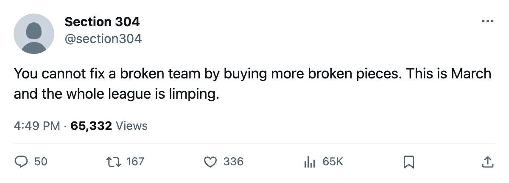

Roster Move Roundup: Six signings, six injuries, 12 days to the deadline
Every player signed between March 2 and March 3 is already on the injured list
 Ray CallumSenior correspondent · Home Ice Network
Ray CallumSenior correspondent · Home Ice NetworkSix players signed between March 2 and March 3. The league has designated all six injured, with onset dates between March 5 and March 7.
 Detroit Red Wings signed left wing
Detroit Red Wings signed left wing  Ray Whitney72 ($545,940) on March 3, the largest salary of the group. The league designates an arm; return targeted for March 30. Detroit carries a league-high 6 on the injured list. Whitney is one of them, alongside
Ray Whitney72 ($545,940) on March 3, the largest salary of the group. The league designates an arm; return targeted for March 30. Detroit carries a league-high 6 on the injured list. Whitney is one of them, alongside  Kris Draper71 (elbow, March 23),
Kris Draper71 (elbow, March 23),  Pavel Datsyuk70 (ankle, March 13),
Pavel Datsyuk70 (ankle, March 13),  Tomas Holmstrom68 (concussion, May 3),
Tomas Holmstrom68 (concussion, May 3),  Kevyn Adams66 (wrist, March 17) and Michael Zigomanis68 (back, March 13). Detroit beat
Kevyn Adams66 (wrist, March 17) and Michael Zigomanis68 (back, March 13). Detroit beat  Tampa Bay Lightning 3-1 on March 5 without any of them.
Tampa Bay Lightning 3-1 on March 5 without any of them.
 Mighty Ducks of Anaheim signed defenseman
Mighty Ducks of Anaheim signed defenseman  Keith Carney71 ($6,840) on March 2 and center
Keith Carney71 ($6,840) on March 2 and center  Samuel Pahlsson67 ($312,020) on March 3. The league designates a hip for Carney, return April 8, and a foot for Pahlsson, return April 23.
Samuel Pahlsson67 ($312,020) on March 3. The league designates a hip for Carney, return April 8, and a foot for Pahlsson, return April 23.
 Vancouver Canucks signed center
Vancouver Canucks signed center  Petr Cajanek77 ($264,050) on March 2. Foot, return April 16.
Petr Cajanek77 ($264,050) on March 2. Foot, return April 16.  Los Angeles Kings signed right wing
Los Angeles Kings signed right wing  Zigmund Palffy83 ($438,140) the same day. Ankle, return April 6.
Zigmund Palffy83 ($438,140) the same day. Ankle, return April 6.  Dallas Stars signed right wing
Dallas Stars signed right wing  Bill Guerin89 ($235,300) on March 3. Back, return April 20.
Bill Guerin89 ($235,300) on March 3. Back, return April 20.
| Player | Club | Signed | Salary | Designation | Return |
|---|---|---|---|---|---|
| Keith Carney | ANA | Mar 2 | $6,840 | Hip | Apr 8 |
| Petr Cajanek | VAN | Mar 2 | $264,050 | Foot | Apr 16 |
| Zigmund Palffy | LA | Mar 2 | $438,140 | Ankle | Apr 6 |
| Samuel Pahlsson | ANA | Mar 3 | $312,020 | Foot | Apr 23 |
| Bill Guerin | DAL | Mar 3 | $235,300 | Back | Apr 20 |
| Ray Whitney | DET | Mar 3 | $545,940 | Arm | Mar 30 |
Only Whitney returns inside March. Dallas Stars already has  Philippe Boucher77 (back, April 5) and
Philippe Boucher77 (back, April 5) and  Richard Matvichuk75 (knee, March 23) on the injured list before adding Guerin's back designation to the pile.
Richard Matvichuk75 (knee, March 23) on the injured list before adding Guerin's back designation to the pile.
The trade deadline is 12 days away.

